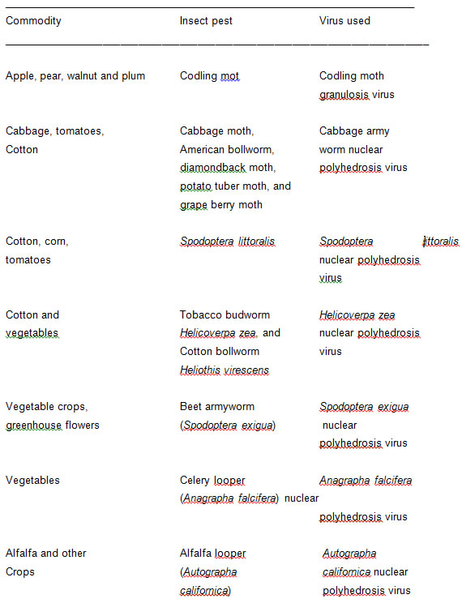

AMBE 101 :: Lecture 26 :: MICROBIAL AGENTS FOR CONTROL OF PLANT DISEASES

The intensive use of pesticides in agriculture is a cause of serious concern. The problem is especially serious because of the development of resistance to pesticides in important pests and the presence of pesticide residue in agricultural and dairy products. In India, the most serious problem of resistance is witnessed in cotton, for which American bollworm is a serious pest. The bollworm has developed resistance to almost all pesticides in a number of regions and is serious problem in many states. Other important pests of cotton, white fly and jassid, have also developed pesticide resistance in some places. Growing pesticide resistance has meant that a large proportion of agricultural production is lost to pests. Pesticide resistance has mainly been caused by excessive and indiscriminate use of pesticides. Pesticides of spurious quality, which are commonly sold in small towns and villages, have also contributed to resistance in many areas.
Excessive use of chemical pesticides in agriculture is a serious cause of concern. It is, therefore, important that alternative, environmental friendly methods of plant protection are adopted such as integrated pest management (IPM) techniques, including the use of biopesticides.
Biopesticides are an important group of pesticides that can reduce pesticide risks. They are derived from animals, plants and microorganisms such as bacteria and viruses. The advantages of biopesticides are:
- They are inherently less harmful than chemical pesticides.
- They, in general, have a narrow target range and a very specific mode of action.
- They are often effective in small quantities. Also, they decompose quickly and do not leave problematic residues.
- They are safer to humans and the environment than conventional pesticides.
Biopesticides is a broad term and includes bioinsecticides, biofungicides, bioherbicides and bionematicides. Microorganisms belonging to different groups like bacteria, fungi ans viruses are used as biopesticides. You will learn about these three groups of organisms in following text.
Bacterial
Bacteria belonging to genus Bacillus are potent against many insect pests. They suppress pests by producing a toxin specific to the pest; causing a disease; preventing establishment of other microorganisms through competition; or other modes of action.
An example of a bacterial pesticide is Bacillus thuringiensis, or "Bt." Bacillus thuringiensis is a naturally occurring soil bacteria that is toxic to the larvae of several species of insects but not toxic to non-target organisms. It is primarily a pathogen of lepidopterpous pests that are some of the most damaging. These include american bollworm in cotton and stem borers in rice. Bacillus thuringiensis can be applied to plant foliage or incorporated into the genetic material of crops. Bacillus thuringiensis, as discovered, is toxic to the caterpillars (larvae) of moths and butterflies. Several strains of Bt have been developed and now strains are available that control fly larvae. These can be used in controlling mosquitoes and blackflies.
Bacillus thuringiensis (Bt) is a ubiquitous gram-positive, spore forming bacterium which produces parasporal crystals during sporulation (stationary phase of its growth cycle). These crystals are predominantly comprised of d-endotoxins or insecticidal crystal proteins (ICPs), known to possess insecticidal activity when ingested by certain insects. The mode of action of Bt involves the following stages:
- ingestion of sporulated Bt and ICP by an insect larva.
- solubilization of the crystalline ICP in the midgut: When Bt crystals are ingested by insects, the crystal proteins are dissolved from the crystals. The pH in the gut of lepidopteran larvae varies between 9 and 12 and the lepidopteran-specific crystal bodies can only be solubilized above pH9.5. On getting solubilized in the midgut, the crystalline bodies release the protein called d-endotoxins.
- activation of the ICP by midgut proteases: The crystalline protoxins are inactive, until they are hydrolysed by the gut proteases. The proteases cleave amino acids from both C-terminus and N-terminus of the protoxin and thus forms the active toxin.
- binding of the activated ICP to specific receptors in the midgut cell membrane: Brush border membrane vesicles (BBMVs) is the primary binding site for several insect species. The active toxins initially bind reversibly to the specific receptors located on the apical brush border membrane of the columnar cells.
- insertion of the toxin in the cell membrane and formation of pores and channels in the gut cell membrane, followed by destruction of the epithelial cells: After binding to the receptor, the toxin inserts irreversibly into the plasma membrane of the cell. The formation of toxin induced pores in the columnar cell of apical membranes allows rapid fluxes of ions. The disruption of the gut integerity leads to the death of the insect through starvation or septicemia.
- subsequent Bt spore germination and septicemia may enhance mortality.
For biopesticide applications, the Bt protein is usually used in a formulation containing the spores and crystalline inclusions that are released upon lysis of Bt cells during growth. The molecular potency of the toxin is 300 times greater than synthetic pyrethroids, and the toxin breaks down quickly when exposed to ultraviolet light/sunlight.
Besides Bacillus thuringiensis, other bacteria like Bacillus popilliae and B. sphaericus are also important for their biocontrol activity. B. popilliae is a Gram-negative spore-forming rod, 1.3 to 5.2 x 0.5 to 0.8 micrometres. It is a fastidious organism that grows only on rich media containing yeast extract, casein hydrolysate or an equivalent amino acid source, and sugars. Trehalose, the sugar found in insect haemolymph, is a favoured carbon source though glucose also can be used. Some varieties of B. popilliae form a crystalline body inside the cell at the time of sporulation and in this respect resemble B. thuringiensis. But the crystal is not thought to play a significant role in infection and certainly it is not as important as in B. thuringiensis. The variety lentimorbus, for example, does not produce a crystal and yet it causes disease. Another difference between B. popilliae and B. thuringiensis is that B. popilliae cannot be induced to sporulate in laboratory media although it does so readily in the diseased host. Actually there are a number of oligosporogenic mutants - ones that produce a few spores - but spores for microbial control programmes are usually produced in living insect larvae - an expensive and time-consuming process. Its spectrum of control includes larvae of Japanese beetles, chafers, some May and June beetles. Spores of B. popilliae persist for long periods in the soil and are ingested by grubs in the soil, and multiply in the hemocoel. The infected larvae do not molt to the next instar, remain active until just prior to death when they become sluggish and moribund.
Bacillus sphaericus is also used to control specific kinds of mosquitoes (especially Culex), including some that transmit diseases such as encephalitis. It is active against the larvae of Culex, Psorophora and Anopheles species; less effective against Aedes species. It is a naturally occurring bacteria - isolated, cultured, and labeled for mosquito control. Bacillus sphaericus acts as an endotoxin to mosquito larvae. It is consumed by the larvae as live bacterium. The bacterium is able to penetrate through the intestines of the mosquito larvae into the hemocoel. Once in the hemocoel, B. sphaericus reproduces and releases lethal doses of toxin killing the mosquito larvae.
Fungal
Beauveria is a naturally occurring fungus in soils throughout the world, and has been researched for control of soil borne insects. Many soil insects, however, may have a natural tolerance to this pathogen, which is not exhibited in many foliar pests. Therefore, commercial development of this fungus for biological control has primarily been targeted against foliar feeding pests.
Beauveria bassiana causes a disease known as the white muscadine disease in insects. Beauveria belongs to fungal subdivision: Deuteromycotina and order: Hyphomycetes. It has a simple life cycle with no known sexual stage; the asexual spores are called conidia. Many strains of Beauveria bassiana are used as biopesticides. It is active against adults and larvae of many kinds of insects; eggs of lepidopteran pests such as moths. The spectrum also includes mole cricket, chiggers, white grubs, fire ants, ants, flea beetle, boll weevil, whiteflies, plant bug, grasshoppers, thrips, aphids, mites and many others.
When spores of this fungus come in contact with the cuticle (skin) of susceptible insects, they germinate and grow directly through the cuticle to the inner body of their host. The fungus proliferates throughout the insect's body, producing toxins and draining the insect of nutrients, eventually killing it. Therefore, unlike bacterial and viral pathogens of insects, Beauveria and other fungal pathogens infect the insect with contact and do not need to be consumed by their host to cause infection. Once the fungus has killed it's host, it grows back out through the softer portions of the cuticle, covering the insect with a layer of white mold (hence the name white muscadine disease). This downy mold produces millions of new infective spores that are released to the environment.
Viral (Insect Viruses)
Baculoviruses are pathogens that attack insects and other arthropods. Like some human viruses, they are usually extremely small (less than a thousandth of a millimeter across), and are composed primarily of double-stranded DNA that codes for genes needed for virus establishment and reproduction. Because this genetic material is easily destroyed by exposure to sunlight or by conditions in the host's gut, an infective baculovirus particle (virion) is protected by protein coat called a polyhedron (plural polyhedra). Most insect baculoviruses must be eaten by the host to produce an infection, that is, typically fatal to the insect.
The majority of baculoviruses used as biological control agents are in the genus Nucleopolyhedrovirus. These viruses are excellent candidates for species-specific, narrow spectrum insecticidal applications (Table 8.8). They have been shown to have no negative impacts on plants, mammals, birds, fish, or even on non-target insects.
On the other hand, the high specificity of baculoviruses is also cited as a weakness for agricultural uses, since growers may want one product to use against a variety of pests. Currently, researchers are attempting to use genetic engineering techniques to expand virus host ranges to the desired pest species. Releases of such genetically-engineered baculoviruses have been made by researchers in the U.K. and the United States and show promise, although the cost of commercial production of these agents must be reduced if they are to be competitive.
Viruses are unable to reproduce without a host - they are obligate parasites. Baculoviruses are no exception. The cells of the host's body are taken over by the genetic message carried within each virion, and forced to produce more virus particles until the cell, and ultimately the insect, dies. Most baculoviruses cause the host insect to die in a way that will maximize the chance that other insects will come in contact with the virus and become infected in turn. Infection by baculovirus begins when an insect eats virus particles on a plant - perhaps from a sprayed treatment. The infected insect dies and "melts" or falls apart on foliage, releasing more virus. This additional infective material can infect more insects, continuing the cycle.
It is widely acknowledged that baculoviruses can be as effective as chemical pesticides in controlling specific insect pests. However, the expense of treating a hectare of land with a baculovirus product invariably costs more than an equally efficacious chemical treament. This difference in price is due primarily to the labor intensive nature of baculovirus production. Some viruses can be produced in vitro (within cell cultures in the laboratory, not requiring whole, living insects). These are less expensive than those that can only be produced in vivo, that is, inside of living insects. The cost of rearing live hosts adds greatly to the final cost of the product. It is to be hoped that insect cell culture systems currently being developed for other uses may ultimately make viral pesticides more cost-effective.
Insects killed by baculoviruses have a characteristic shiny-oily appearance, and are often seen hanging limply from vegetation. They are extremely fragile to the touch, rupturing to release fluid filled with infective virus particles. This tendency to remain attached to foliage and then rupture is an important aspect of the virus life-cycle. As discussed above, infection of other insects will only occur if they eat foliage that has been contaminated by virus-killed larvae.
Viruses used against different insect-pests of plants

Biocontrol
Biocontrol or Biological control can be defined as the use of natural enemies to control pests. Natural enemies of pests are categorized as parasites, predators and pathogens. It is a broad term that also includes use of biopesticides.
About 30% of the yield in agriculture is lost because of the combined effects of biotic and abiotic stresses, with pathogenic fungi alone responsible for a reduction of about 12%. Control of fungal pathogens is based on the use of agronomic practices and pesticides, but widespread application of chemicals inundates the agroecosystems with toxic compounds that affect the balance of the natural food chain. In addition, resistant and more virulent pathogen populations are selected causing escalation in the amount of pesticides used. A variety of new technologies are being developed to integrate or substitute the application of chemicals in an attempt to reduce both the ecological and financial cost of disease control. Antagonistic microorganisms are being studied in depth and considered as an attractive option for the development of microbial-based biofungicides. Successful and consistent results have been achieved with some biocontrol agents such as Agrobacterium and Bacillus, whose mechanisms of biocontrol are largely understood. However, limitations in the practical use of bacterial agents often arose from the production of toxic substances and formulations with a short shelf-life. The application of fungal biocontrol agents has also been delayed because of difficulties in obtaining consistent results in biocontrol and the relatively poor understanding of the plant-microbe and microbe-microbe interactions involved in the antagonistic processes.
While diverse microbes may contribute to the biological control of plant pathogens, most research and development efforts have focused on isolates of three genera, Bacillus, Trichoderma, and Pseudomonas.
The most studied fungal biocontrol agents are Trichoderma spp. and some isolates, effective as biofungicides in certain culture conditions, have been recently introduced in commercial agriculture. Concurrently, fundamental discoveries concerning the mechanism of action of these fungi have been made. Studies on the mechanism of biocontrol had indicated that Trichoderma and other mycoparasites have developed a vast array of molecular tools to support their parasitic behaviour. It is believed that Trichoderma produces different types of lytic enzymes that act on the cell wall of fungi and kill them. Genes encoding for cell wall degrading enzymes (CWDES) such as chitinolytic, glucanolytic and proteolytic enzymes have been isolated and used to improve biocontrol capabilities of Trichoderma strains.
Two species of Trichoderma, T. harzianum and T. viride are commonly used as biocontrol agent. Their spectrum of control includes fungal pathogens like Armillaria, Pythium, Rhizoctonia, Verticillium, Sclerotium and Botrytis.
| Download this lecture as PDF here |